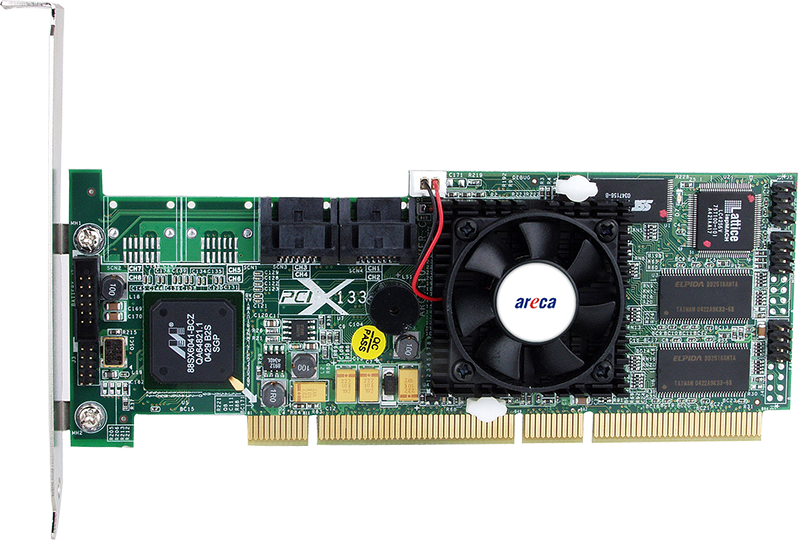

ARC-1110
4/8-port PCI-X to SATA ll RAID Adapters
SATA RAID Adapters
As storage capacities continue to rapidly increase, users need greater level of disk drive fault tolerance.
SAS RAID Adapters
PCIe to SAS RAID host adapter can provide up to (128) SAS/SATA ll peripheral devices using SAS expanders.
Non-RAID Adapters
The host bus adapter drives external server storage RAID and non-RAID enclosures with unprecedented throughput by connecting a four-lane 2.5 Gb/s.